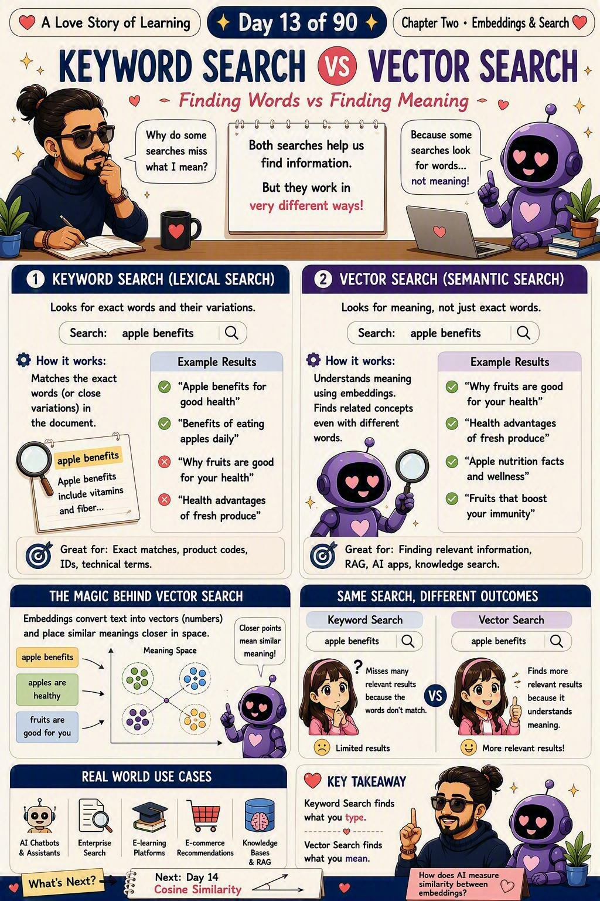

📜 The 30-second brief
Both searches help us find information — but they work in very different ways. Keyword search (lexical search) looks for the exact words you typed and their close variations. Vector search (semantic search) looks for the meaning behind your words, using embeddings.
Type "apple benefits". Keyword search returns only pages that literally contain those words. Vector search also finds "why fruits are good for your health" — because it understands the idea, even when the words don't match. That single difference is why modern AI apps feel so much smarter than old search boxes. 💕
💌 A fresh analogy: two librarians
The first librarian only understands exact titles. Ask for "a book about a boy wizard" and, if the word "wizard" isn't printed on the cover, she shrugs. That's keyword search — precise, fast, but literal.
The second librarian has read everything and remembers where each idea lives on the shelves. Ask her the same thing and she walks straight to the magic and adventure section and hands you exactly what you meant — no exact title needed. That's vector search: she navigates by nearness of meaning, not matching letters. 📚
🔍 Side by side: same query, different outcomes
| 🔤 Keyword Search (Lexical) | 🧭 Vector Search (Semantic) | |
|---|---|---|
| What it looks for | Exact words and close variations. | Meaning, not just exact words. |
| How it works | Matches the exact words in the document. | Understands meaning using embeddings; finds related concepts. |
| Query: "apple benefits" | ✅ "Apple benefits for good health" ❌ "Why fruits are good for your health" | ✅ "Why fruits are good for your health" ✅ "Fruits that boost your immunity" |
| Great for | Exact matches, product codes, IDs, technical terms. | Relevant information, RAG, AI apps, knowledge search. |
| The feeling | 😕 Limited results — misses matches when words differ. | 😊 More relevant results — understands what you meant. |
✨ The magic behind vector search
Embeddings convert text into vectors (numbers) and place similar meanings closer together in space. So these three all cluster near each other:
- "apple benefits"
- "apples are healthy"
- "fruits are good for you"
Closer points mean similar meaning. That's the whole trick — vector search doesn't read words, it measures how near two ideas sit in this "meaning space."
🧵 Where this fits among its look-alikes
Keyword search, vector search, embeddings, cosine similarity, vector databases — they blur together until each gets a clear job. Same city story: you move to a huge new city and want to find people who think like you.
| Concept | Its role in the story | In one line |
|---|---|---|
| 🔤 Keyword Search | Finding people by their exact name on a list — miss the spelling, miss the person. | Match the words. |
| 🧭 Embeddings (Note 11) | Every person gets a "home address" based on how they think. | Turn meaning into location. |
| 🔍 Semantic / Vector Search (Note 13 · today) | Walking the city to reach the nearest like-minded people, by meaning. | Find by meaning. |
| 📐 Cosine Similarity (Note 14) | The ruler that decides who counts as "near" — by direction of thinking. | The measure of nearness. |
| 🗄️ Vector Database (Note 15) | The city directory storing every address for instant lookup. | The home for the vectors. |
The through-line: Keyword search matches the words; embeddings build the map of meaning; vector search is the act of finding by meaning; cosine similarity is the ruler it uses; the vector database is the home. Today is the moment we choose meaning over spelling. 💗
💡 Real-world use cases
- AI chatbots & assistants. Understand messy questions and reply with the right meaning.
- Enterprise search. Employees find the right doc even when they don't know the exact title.
- E-learning platforms. Surface related lessons by concept, not just keyword.
- E-commerce recommendations. "More like this" by meaning of the product, not its name.
- Knowledge bases & RAG. Retrieve the most relevant passages to feed an LLM.
🏭 Real-world example: the support bot that found the right runbook
An engineer types "pipeline stuck, load didn't finish overnight." No runbook is titled exactly that. Keyword search returns junk because the words don't line up.
Vector search embeds that sentence and finds the nearest runbook vectors — pulling up "DAG hung in running state" and "Snowflake load delay recovery" even though the wording is different. It matched the problem, not the phrasing. That's the backbone of a RAG assistant that drafts an RCA from your own runbooks. 🔧
🛡️ When to use which (they're friends, not rivals)
- Use keyword search for exact matches — product codes, IDs, error codes, legal/technical terms.
- Use vector search for intent — natural-language questions, "find something like this," RAG.
- Best of both: hybrid search. Combine keyword + vector to catch exact terms and meaning.
- Same embedding model both sides, or the geometry breaks.
- Tune top-K for vector results — around 3–5 for RAG keeps it focused.
⚠️ Common misconceptions
- "Vector search always beats keyword search." No — for exact IDs and codes, keyword search is better and faster.
- "Keyword search is obsolete." No — it's still the right tool for precise, literal lookups, and hybrid search uses both.
- "Vector search reads words." No — it measures nearness between embeddings, not text.
- "They're the same thing with different names." No — one matches words, the other matches meaning.
- "More results = better." No — a bloated result set feeds noise into RAG and hurts answers.
🎓 Quick self-test (exam-style)
- What does keyword search match?
The exact words you typed (and close variations). - What does vector search match?
The meaning behind your words, using embeddings. - Why can vector search find results with no matching words?
Because similar meanings sit closer together in vector space. - When is keyword search the better choice?
For exact matches — product codes, IDs, technical terms. - What's hybrid search?
Combining keyword + vector search to get both exactness and meaning.
📚 Key terms to carry forward
- Keyword / lexical search — matching the exact words in a document.
- Vector / semantic search — matching meaning via embeddings.
- Meaning space — the space where similar ideas sit closer together.
- Hybrid search — combining keyword and vector search.
- Embeddings — the numbers that turn meaning into vectors (Note 11).
⚡ 60-second flashcard (last look before the exam)
| The one-line takeaway | Keyword search finds what you type; vector search finds what you mean. |
| The mental model | Two librarians — one literal, one who knows what you meant. |
| Keyword search is great for | Exact matches, product codes, IDs, technical terms. |
| Vector search is great for | RAG, AI apps, knowledge search, natural questions. |
| The magic behind it | Embeddings place similar meanings closer in space. |
| Best of both | Hybrid search. |
| Nearness measured by | Note 14 · Cosine Similarity. |
| Vectors come from | Note 11 · Embeddings. |
| Stored in | Note 15 · Vector Databases. |
| Interview line | "Keyword search matches words; vector search matches meaning via embeddings." |
🖼️ Today's cheat sheet
The same image shared on the LinkedIn post for Note 13.

✨ Next spark
Vector search finds the nearest ideas — but how does AI actually measure similarity between two embeddings? What's the ruler behind every match? That's where Note 14 · Cosine Similarity takes us — the quiet tool that measures the angle of meaning between two vectors. 💕